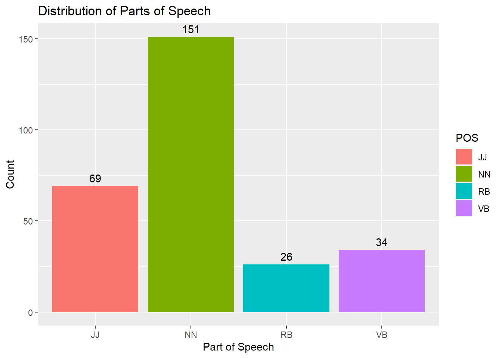
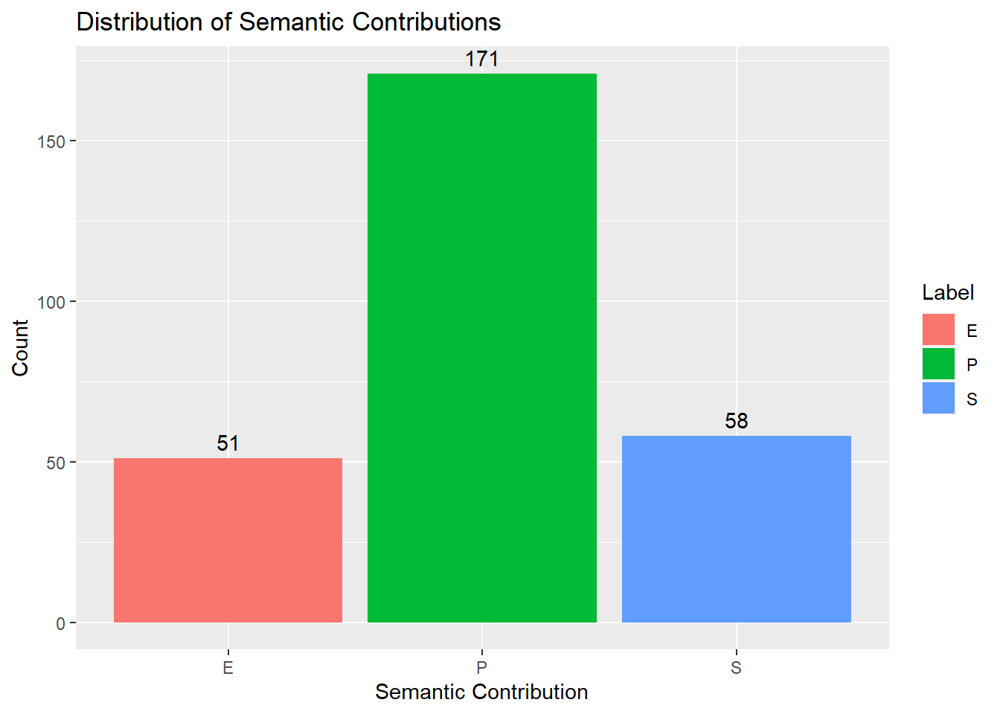
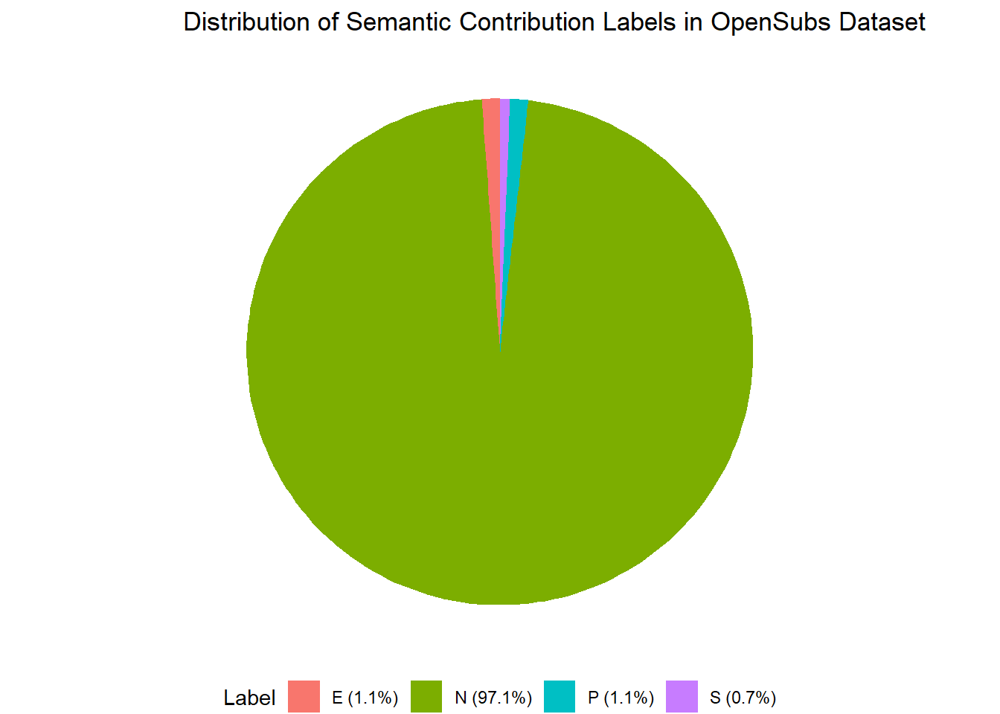

data <- read.csv("../data/salad_consolidated_refined.csv")
head(data) Word Label POS
1 adam S NN
2 aggressive P JJ
3 aggressive P JJ
4 alone E JJ
5 amherst P NN
6 anywhere E RBdata <- read.csv("../data/salad_consolidated_refined.csv")
head(data) Word Label POS
1 adam S NN
2 aggressive P JJ
3 aggressive P JJ
4 alone E JJ
5 amherst P NN
6 anywhere E RB#toy.data <- data.frame(
# part.of.speech = sample(c("noun", "verb", "adjective"), 100, replace = TRUE),
# semantic.contribution = sample(c("prototypical", "extreme", "salient"), 100, #replace = TRUE)
#)
#head(toy.data)library(ggplot2)
ggplot(data, aes(x = POS, fill = POS)) +
geom_bar() +
geom_text(stat='count', aes(label= after_stat(count)), vjust=-0.5) +
labs(title = "Distribution of Parts of Speech",
x = "Part of Speech",
y = "Count")
library(ggplot2)
ggplot(data, aes(x = Label, fill = Label)) +
geom_bar() +
geom_text(stat='count', aes(label= after_stat(count)), vjust=-0.5) +
labs(title = "Distribution of Semantic Contributions",
x = "Semantic Contribution",
y = "Count")
library(ggplot2)
library(nnet)
summary(data) Word Label POS
Length:280 Length:280 Length:280
Class :character Class :character Class :character
Mode :character Mode :character Mode :character ggplot(data, aes(x = POS, fill = Label)) +
geom_bar() +
labs(title = "Distribution of Semantic Contributions by POS",
x = "POS",
y = "Count")
model <- multinom(Label ~ POS, data = data)# weights: 15 (8 variable)
initial value 307.611441
iter 10 value 238.451445
final value 238.446464
convergedsummary(model)Call:
multinom(formula = Label ~ POS, data = data)
Coefficients:
(Intercept) POSNN POSRB POSVB
P 0.1880563 1.990487 0.3997348 1.247021
S -1.7578396 2.769452 2.6332902 2.227846
Std. Errors:
(Intercept) POSNN POSRB POSVB
P 0.2511061 0.3947435 0.6116885 0.5573802
S 0.4842312 0.5900145 0.7195921 0.7479828
Residual Deviance: 476.8929
AIC: 492.8929 z <- summary(model)$coefficients/summary(model)$standard.errors
z (Intercept) POSNN POSRB POSVB
P 0.7489118 5.042483 0.6534942 2.237289
S -3.6301656 4.693871 3.6594206 2.978472p <- (1 - pnorm(abs(z), 0, 1)) * 2
p (Intercept) POSNN POSRB POSVB
P 0.4539103580 4.595306e-07 0.5134377591 0.025267459
S 0.0002832394 2.680833e-06 0.0002527862 0.002896896head(pp <- fitted(model), n=20) E P S
1 0.07946939 0.7019874 0.21854326
2 0.42028842 0.5072467 0.07246485
3 0.42028842 0.5072467 0.07246485
4 0.42028842 0.5072467 0.07246485
5 0.07946939 0.7019874 0.21854326
6 0.19230901 0.3461578 0.46153322
7 0.07946939 0.7019874 0.21854326
8 0.07946939 0.7019874 0.21854326
9 0.19230901 0.3461578 0.46153322
10 0.07946939 0.7019874 0.21854326
11 0.42028842 0.5072467 0.07246485
12 0.42028842 0.5072467 0.07246485
13 0.07946939 0.7019874 0.21854326
14 0.07946939 0.7019874 0.21854326
15 0.14705943 0.6176449 0.23529567
16 0.07946939 0.7019874 0.21854326
17 0.07946939 0.7019874 0.21854326
18 0.42028842 0.5072467 0.07246485
19 0.07946939 0.7019874 0.21854326
20 0.07946939 0.7019874 0.21854326Values repeat by POS, so extracting one example of each will give us the probability of having a certain semantic contribution given POS.
Example 1: NN, Example 2: JJ, Example 6: RB, Example 15: VB
library(tibble)
(my_tibble <- tibble(
Part.of.Speech = c("NN", "JJ", "RB", "VB"),
E = c(0.07946939, 0.42028842, 0.19230901, 0.14705943),
P = c(0.7019874, 0.5072467, 0.3461578, 0.6176449),
S = c(0.21854326, 0.07246485, 0.46153322, 0.23529567)
))# A tibble: 4 × 4
Part.of.Speech E P S
<chr> <dbl> <dbl> <dbl>
1 NN 0.0795 0.702 0.219
2 JJ 0.420 0.507 0.0725
3 RB 0.192 0.346 0.462
4 VB 0.147 0.618 0.235